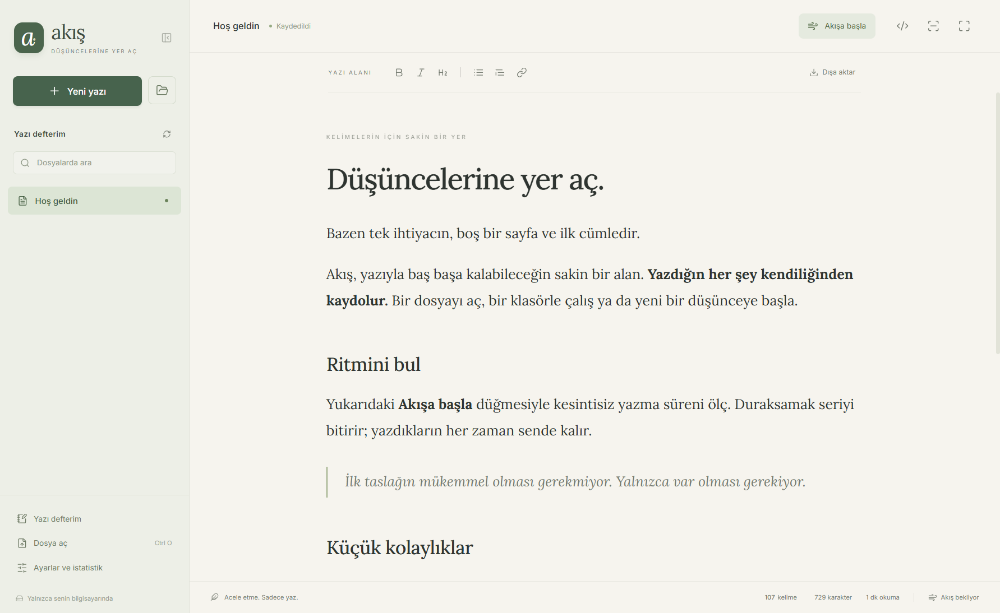
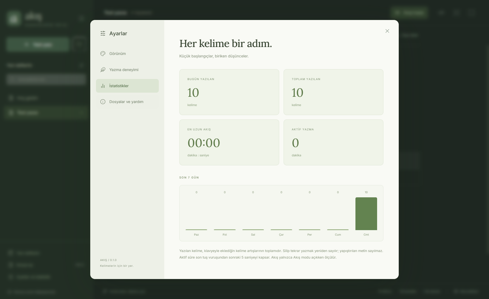

Kaydetme telaşı yok.
Yazdıkların kendiliğinden kaydolur. Bir önceki sürüm yedeklenir; başka yerde değişen dosyanın üzerine yazılmaz.
KaydedildiKaydetmeyi, menüleri, açık sekmeleri unut.
Bir sayfa aç. İlk cümleni yaz. Gerisi akışına gelsin.

Akış, düşünceni yakalamanı kolaylaştıran küçük ayrıntılarla dolu. İhtiyacın olduğunda yanında, yazarken arka planda.
Yazdıkların kendiliğinden kaydolur. Bir önceki sürüm yedeklenir; başka yerde değişen dosyanın üzerine yazılmaz.
KaydedildiAynı anda tek yazıya odaklan. Klasöründeki diğer Markdown dosyaları solda, bir tık uzağında kalsın.
▱ Yazı defterim / Yeni düşünceler.mdBaşlıklar, alıntılar, listeler ve tablolar yazarken biçimlenir. İstediğinde tek hareketle ham kaynağa geç.
# Başlık **kalın** *italik*Yazı tipini, satır aralığını ve renklerini değiştir. Kendi rengini ya da arka plan görselini ekle.
Yumuşak tuş sesleriyle ritmini bul. İstersen tamamen sessiz yaz; daktilo odağıyla etkin satırı ortada tut.
Bugün kaç kelime yazdın? En uzun akışın ne kadardı? Ayarlarda yazma süreni ve son yedi gününü gör.
Kelimeler / Süre / AkışAkış modu, kesintisiz yazdığın süreyi ölçer. İlk harfle başlar. Uzun bir mola verdiğinde seri biter; yeni bir kelimeyle yeniden başlar.
Bir süreliğine mükemmel cümleyi aramayı bırak. Düşünceni takip et. Yazdıkların her zaman sende kalır.

Günün sonunda, bir şeyler yazdığını görmek iyi gelir. Kelimelerini ve yazarken geçirdiğin zamanı tek ekranda takip et.
İstatistikler bilgisayarında tutulur. Yapıştırılan metin, klavyeyle yazılan kelime toplamına eklenmez.
Dosyaların standart Markdown biçiminde, kendi bilgisayarında.
İstersen başka bir editörde aç. İstersen kendi klasörünle çalış.
Akış ücretsiz ve MIT lisansıyla açık kaynak.
Hazır paketleri GitHub sürümlerinden indirebilirsin.
İlk sürümde paketler imzasızdır; işletim sistemin güvenlik uyarısı gösterebilir.
Yeni yazılar kendiliğinden dosyaya dönüşür. Yazarken, dosya değiştirirken ve uygulamayı kapatırken kayıt yapılır. Kayıt hataları görünür biçimde bildirilir; yazını dışa aktarabilir ve kurtarma taslağını bulabilirsin.
Hayır. Yalnızca kesintisiz yazma serisi biter. Yazın korunur; yeniden yazmaya başladığında yeni bir seri başlar.
Uygulama yerel olarak çalışır. Hesap veya zorunlu internet bağlantısı gerekmez. İnternetten görsel kullanan Markdown belgeleri o görselleri yüklemek için bağlantı kullanabilir.
Evet. Dosya veya proje klasörü açabilirsin. Windows kurulum sürümü sağ tık menüsüne “Akis ile yaz” seçeneğini ekler. Özel Markdown uzantıları için kaynak görünümünü kullan.